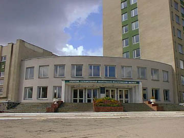

| |
Крымский
государственный инженерно-педагогический университет
Крымский государственный инженерно-педагогический
университет – это высшее учебное заведение, расположенное в г. Симферополе
в Крыму. Основанный в 1993 году, университет направлен на обеспечение
по региону высококвалифицированного инженерно-технического персонала
и преподавателей, которые будут помогать в восстановление Крымско-татарского
народа, и способствовать возрождению национального языка и культуры
на их родной земле – Крыму.
|
 |
Учебное заведение состоит из четырех факультетов:
Инженерно-педагогический факультет со специализацией:
- технология машиностроения
- эксплуатация и ремонт городского и автомобильного транспорта
- охрана труда в машиностроении
- моделирование конструирование и технология швейных изделий.
Педагогический факультет со специальностями:
Факультет Экономики и Информатики:
- Информатика, Социальная Информатика, Учет и Аудит, Менеджмент Организаций
Учебное заведение имеет исследовательские лаборатории, аудитории оборудованные
компьютерами,
механические мастерские, центр, специализирующийся по методике преподавания
различных предметов, и библиотеку, в наличие которой более 50 тысяч
книг. В настоящее время, более 5 тысяч являются студентами вуза, которых
обучают более 300 преподавателей. Большинство студентов составляют крымские
татары.
Поскольку Крымский государственный инженерно-педагогический университет
образован был недавно, то ощущается нехватка соответствующих ресурсов
для выполнения заданной цели полностью. В прошлом, Университет получил
финансовую поддержку от представителей крымско-татарской диаспоры из
Турции, также поддерживает программы по обмену преподавателей на уровне
университетов. Он продолжает искать помощи на приобретение технического
оборудования, компьютерных программ, и эффективных материалов обучения.
|